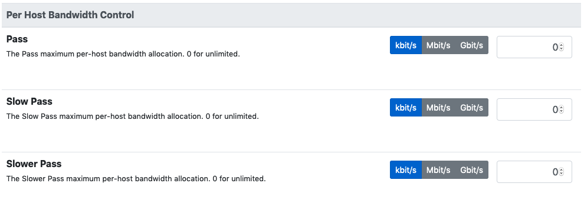

Bandwidth Control
nEdge provides extensive per-user, per-protocol bandwidth control capabilities. This is a brief overview of the available features:
Limit the global available bandwidth
Reserve bandwidth for a specific user
Provide 3 different bandwidth classes: Default, Slow Pass, Slower Pass
Limit the per-host bandwidth
A bandwidth class can be assigned to a specific user protocol/category through the user policies.
Interface Speed
The global available bandwidth can be configured on a per-interface basis. Into the Interfaces Configuration section the interface speed indicates what’s the globally available bandwidth for traffic flowing from/to the specified interface.

Interface upload and download speed configuration
In the picture above, the traffic flowing through the interface will be limited to 10 Mbit/s in both the upload and download directions. Usually the interface speed should match the available internet bandwidth.
Global Bandwidth Control
After configuring the interfaces speeds, it is possible to fine tune bandwidth allocation by the means of the bandwidth classes. nEdge provides 3 configurable bandwidth classes. The global bandwidth classes can be configured from the Global Bandwidth Control settings.

Global bandwidth classes configuration
A percentage rate can be specified for each available class. The percentage is referred to the configured interfaces speed. For example, supposing the nEdge is routing mode and with two configured WAN interfaces, one with 10 Mbit/s download speed and another with 100 Mbit/s download speed, a 75% rate would limit the clients download traffic to 7.5 Mbit/s when going out to the first interface, and to 75 Mbit/s traffic when going out the 100 Mbit/s interface.
It is important to note that, by default, the global bandwidth classes do not limit the traffic in advance but rather indicate an allocation share between the classes. This means that a 75% class will guarantee a minimum 75% bandwidth allocation when the network bandwidth demand is high, but it will not prevent the clients to gain 100% bandwidth when such a bandwidth is available. This is the Minimum Guaranteed bandwidth allocation policy.
In order to limit the clients bandwidth in advance the Maximum Enforced bandwidth allocation policy can be used instead.
Per-Host Bandwidth Control
In nEdge is also possible to define a per-host maximum rate. This setting does not depend on the configured interface speed, so an absolute rate is used.

Per-host bandwidth classes configuration
As an example, by setting a 1 Mbit/s maximum rate on the Default class, the traffic of each host with a Default class will be limited to 1 Mbit/s.
Fair Bandwidth
Within the same bandwidth class, nEdge will distribute the available bandwidth between the hosts in a fair way. For example, when two different hosts belong to Default class, they will be guaranteed a 50% minimum share of the Default class bandwidth. If the hosts are three, then a 33% of the class bandwidth will be guaranteed, if they are four a 25% and so on.
Quotas
nEdge supports per-user and per-application quotas. Quotas can be configured both in terms of time or in terms of volume of traffic.
When a quota is exceeded, the user is prevented from doing additional traffic. Quotas can be daily, weekly, or monthly:
A daily quota is reset every day at midnight
A weekly quota is reset every week on Sunday at midnight
A monthly quota is reset every last day of the month at midnight
Quotas reset can be configured from the System Setup under Bandwidth Control.

Quotas Configuration